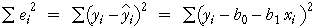

If you don't want to print now,
Units and strength of a relationship
A numerical summary of the strength of the relationship between two variables should not depend on the units in which we measure the two variables. The strength of the two relationships between Angle and Temperature are the same in both of the scatterplots below.
We therefore start by defining units-free versions of the two variables and will summarise the strength of the relationship in terms of them.
Z-scores
The standardised form of a variable X is found by subtracting its mean then dividing by its standard deviation,
standardised value, 
The resulting values are called z-scores and are the same, whatever the units in which X was originally recorded.
Properties of z-scores
A standardised variable always has zero mean and standard deviation one.

From the 70-95-100 rule-of-thumb,
An individual's z-score tells you how many standard deviations it is above the mean. From its value, you can tell whether the value is very high (say over +2) or low (say under -2) in relation to the other values of the variable.
Definition
The correlation coefficient is usually defined by the formula

It is however easier to understand if written in terms of standardised versions of X and Y,

The correlation coefficient is a kind of average of the products of the z-scores.
How does r relate to the shape of a scatterplot?
The following properties of r explain in general terms how its value is related to the strength of a relationship in any particular scatterplot.
 |
|
 |
|
 |
 |
| −1 ≤ r ≤ +1 | |
How does r relate to the shape of a scatterplot?
The properties on the previous page describe the general behaviour of the correlation coefficient, but do not give enough resolution for you to anticipate the type of scatterplot that might have correlation coefficient 0.8 say, or 0.96.

Note that values of r between -0.5 and 0.5 correspond to very weak relationships.
Correlation and nonlinear relationships
The correlation coefficient, r, is a good description of the strength of a relationship provided the crosses in a scatterplot of the data are not scattered round a curve. If the data are scattered round a curve, the relationship is called nonlinear and r may seriously underestimate its strength.
The correlation coefficient does not describe the strength of nonlinear relationships adequately.
Always look at a scatterplot first
Although the correlation coefficient is a good description of the strength of many relationships, it does not adequately describe others.
A scatterplot should always be examined to help assess whether there are features in the data that the correlation coefficient cannot describe.
The data sets below share the same value of r = 0.816 (and the same means and st devns for X and Y) but their scatterplots show that different conclusions should be drawn from them.

The notion of prediction
Notation and convention
If the variables can be classified as an explanatory variable and a response, we use the letter X to denote the explanatory variable and Y to denote the response.
Always draw the response variable, Y, on the vertical axis of a scatterplot and X on the horizontal axis.
Predicting the response
The correlation coefficient describes the strength of a relationship, but does not help you to predict Y from X.
A curve or straight line that is drawn close to the crosses on a scatterplot (by eye or by any other method) is called a regression line and can be used to 'read off' the y-value corresponding to any x.

Equation to describe a regression line
A regression line could be drawn 'by eye' through a scatterplot, but we restrict attention to simple mathematical functions
y = ƒ ( x )
since they are easier and more objective to use.
Linear model
Some relationships must be described by curves, but a straight line is an adequate description of many bivariate data sets.
y = b0 + b1 x
The constant b0 is the intercept of the line and describes the y-value when x is zero. The constant b1 is the line's slope; it describes the change in y when x increases by one.

The predicted response at any x-value is
 = b0 + b1 x
= b0 + b1 x
Fitted values
To assess how well a particular linear model fits any one of our data points, (xi, yi), we might consider how well the model would predict the y-value of the point,
 = b0 + b1 xi
= b0 + b1 xi
These predictions are called fitted values.
Residuals
The difference between the i'th fitted values and its actual y-value is called its residual.
ei = yi − 
The residuals describe the 'errors' that would have resulted from using the model to predict y from the x-values of our data points.

Note that the residuals are the vertical distances of the crosses to the line.
Aim of small residuals
The residuals from a linear model (vertical distances from the crosses to the line) indicate how closely the model's predictions match the actual responses in the data.

Small residuals are good, so the parameters b0 and b1 should be set to make them as small as possible.
Least squares
The size of the residuals is summarised by the residual sum of squares,

'Good' values for b0 and b1 can be objectively chosen to be the values that minimise the residual sum of squares. This is the method of least squares and the values of b0 and b1 are called least squares estimates.
The diagram below respresents the squared residuals as blue squares. The least squares estimates minimise the total blue area.
Formulae
The problem of minimising the residual sum of squares is not difficult mathematically, but you will rarely require or use the resulting formulae for b0 and b1 since spreadsheets, statistical programs and even scientific calculators will do the calculations for you. However, for completeness, the formulae are
Nonlinear relationships
A simple linear model is only appropriate when the cloud of crosses in a scatterplot of the data is regularly spread around a straight line. If the crosses are scattered round a curve, the relationship is called nonlinear and other models must be used.
Outliers
Another problem arises if there are outliers — observations that do not conform to the pattern and variability exhibited by the rest of the data. In a linear model, the most important type of outlier is a data point that lies at a distance from the line that would fit through the rest of the data.
The individual corresponding to any outlier should be carefully examined. Recording or transcription errors may be the cause. Alternatively, it may be possible to determine some distinguishing characteristic of the individual that underlies the unusual response measurement.
If an outlier is extreme enough, or if a special cause for its unusual behaviour can be found from outside information, the individual can be classified as aberrant and deleted from the data set.
It is important to look at any data set graphically before fitting a linear model to check that no curvature or outliers is present.
Detecting problems with the model
If outliers or curvature are present in a data set, they are often visible in a scatterplot of the response against the explanatory variable. However these features are usually clearer if the residuals are plotted against X rather than the original response.

Different lines are used to predict Y and to predict X
The least squares line for predicting Y from X,
y = b0 + b1 x
minimises the sum of squared vertical distances between the points on a scatterplot and the line. On the other hand, if we are interested in predicting X from Y using a line,
x = c0 + c1 y
the residuals are the horizontal distances between the points and the line, and least squares minimises their sum of squares.

Different lines minimise the sum of squares of horizontal and vertical distances.
About the two least squares lines
The two least squares lines can be written in terms of standardised variables,
| Equation of least squares line to predict Y from X | |
|---|---|
| Equation of least squares line to predict X from Y |
where r is the correlation coefficient between X and Y. Since r is always less than 1, the least squares line for predicting Y from X is the more horizontal (closer to being parallel to the x-axis) of the two lines.

Correlation coefficient and nonlinear relationships
The correlation coefficient, r, is a good description of the strength of linear relationship but not nonlinear ones. If a scatterplot shows marked curvature, the correlation coefficient can considerably understate the strength of the relationship.
Transform the variables to linearise the relationship
Nonlinear transformations of X and Y alters the shape of the relationship. It is often possible to linearise a relationship by transforming one or both variables.
The strength of a nonlinear relationship can therefore be described with the correlation coefficient after a transformation to one or both variables has been applied to remove the nonlinearity.

Linear model with transformed variables
If the relationship between Y and X is nonlinear, a linear model will give poor predictions and must be avoided.

However, by transforming one or both of the variables, it is often possible to linearise the relationship and therefore use least squares to fit a linear model to the transformed variables.

A logarithmic transformation of either Y or X often works, but a more general power transformation is sometimes needed to linearise the relationship.
Adding a quadratic term
An alternative solution to the problem of curvature is to extend the simple linear model with the addition of a quadratic term,
y = b0 + b1 x + b2 x2
Fitted values and residuals are defined (and interpreted) in a similar way to those for a linear model,
 = b0 + b1 xi + b1 xi2
= b0 + b1 xi + b1 xi2
ei = yi − 
As in a linear model, the quadratic model's residuals are the vertical distances between the crosses in a scatterplot and the curve. We again use least squares to estimate the unknown parameters — choose values of the three parameters to minimise the residual sum of squares,
The shape of a relationship is only known around the data
The models that we have used to describe the relationship between a response, Y, and explanatory variable, X, are usually only approximations to the 'real' relationship. For example, a scatterplot may look linear, but we really have no information about the shape of the relationship beyond our data.

A model may be useful for predicting Y from values of X that are within the range of x-values in our data, but we should be very cautious about using it to predict Y outside this range. This is called extrapolation and it can be badly in error.
Avoid using a model to predict Y far beyond the available data.
Three or more variables
We previously described the relationship between two numerical variables, X and Y.
In many applications, more than two measurements are made from each individual and the additional variables may throw light on the relationship.
Use of this extra information may lead to more accurate predictions of Y.
Distinguishing groups in a scatterplot
We now consider how a categorical variable, Z, can help explain the relationship between two numerical variables, X and Y. It equivalently examines whether the relationship between X and Y is the same in each of several groups.
As in most other situations, data analysis should start by examining the data graphically. Differences between the groups can be shown with different symbols and/or colours for the crosses in a scatterplot of Y against X.

Least squares in each group
We can separately examine the relationship between X and Y in each group (or equivalently for each value of a categorical variable, Z). If the relationship between X and Y is different in the different groups, this should lead to more accurate predictions of Y from X.
A regression line can be separately fitted by least squares in each group.

Separate regression lines
The problem with fitting separate regression lines by least squares in the different groups is that it is difficult to concisely explain the difference between the groups — the difference between the predicted response in the groups depends on the value of the explanatory variable.

Parallel regression lines
Interpretation is considerably simplified if we constrain the regression lines for the different groups to have the same slope. In the diagram below, the difference between the groups is the same for all values of X.

Parallel lines are not appropriate descriptions of all data sets. Always check a scatterplot first.
Least squares
The principle behind fitting parallel lines to two or more groups is the same as in ordinary simple regression — we choose the parameters to minimise the sum of squared residuals (vertical distances between the data crosses and their corresponding line). The resulting formulae are complicated, but most statistical software will do the calculations for you.
Transformation of the response
It is much easier to interpret the parameters when parallel lines are fitted to different groups than when their slopes are different, but the data or the context may not justify such a simplification.

After a nonlinear transformation of the response, the relationships in the two groups may be closer to parallel. A transformation to reduce skewness in the reponse often works well.

Understanding the model for ln(y)
Logarithmic transformations are particularly useful because the parallel least squares lines have a simple interpretation. For the above data they are:
Female: ln (y) = 0.391 + 0.0747 x
Male: ln (y) = 1.192 + 0.0747 x
This means that:
ln(y) is (1.192 - 0.391) = 0.801 higher for females than for males with the same x.
We can now concisely summarise the difference between males and females:
y for females is e0.810 = 2.23 times that for males with the same x.
Definition of groups
A categorical variable naturally splits the individuals into groups, but a numerical variable, Z, can also be used to define groups.

Distinguishing groups in a scatterplot matrix
A scatterplot matrix can help to describe the relationships between 3 or more numerical variables. If each individual belongs to one of several known groups, different symbols or colours can be used to distinguish the groups.